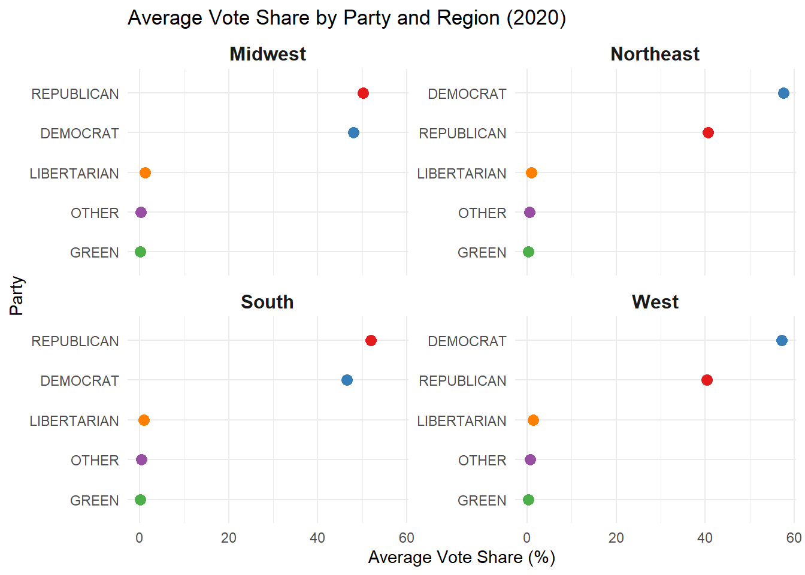

The major political parties (Democrat and Republican) dominate the voting landscape, reflecting a two-party system’s strength in the U.S.
Across all regions, the vote percentages for smaller parties remain marginal, with slight fluctuations. While smaller parties like Green and Libertarian hold less than 5% of the vote share across all regions, their presence highlights the diversity in political preferences.
3.1.2 Trends Over Time:
Midwest: The region shows a competitive split between Democrats and Republicans, with Republicans gaining slight momentum in recent years.
Northeast: The Democratic party consistently dominates, reflecting a strong blue trend over the two decades.
South: The Republican party holds a significant lead throughout the period, emphasizing its traditional stronghold in this region.
West: While the Democrats maintain a consistent lead, there is a more diverse vote share, with smaller parties like Green and Other having a visible presence.
The Northeast and South show remarkable stability in their dominant party preferences (Democrat and Republican, respectively). The Midwest and West reflect more dynamic trends, with visible shifts in vote percentages, especially during election years like 2008 and 2016.
3.1.3 Implications:
The findings highlight deep regional divides in political preferences, with the South being reliably Republican and the Northeast consistently Democratic. The Midwest and West emerge as more competitive regions, making them key battlegrounds in presidential elections. Smaller parties, while not competitive at a national scale, represent alternative voices that persist in the political landscape.
While time series plots are valuable for understanding how trends evolve over multiple election cycles, this Cleveland dot plot focuses on a single point in time—specifically, the 2020 election—to highlight the distribution of average vote shares by region and party. By zeroing in on one year, we can more clearly see the comparative standing of each party without the distraction of changing trends.
3.2.1 Implications:
Northeast: Democrats maintain a strong lead over Republicans, with smaller parties (Green, Libertarian, and Other) capturing only marginal shares.
Midwest: The Republicans and Democrats are relatively close, indicating a more competitive landscape than the Northeast. Nonetheless, the two major parties dominate, while smaller parties remain on the periphery.
South: Republicans have a noticeable advantage over Democrats, reflecting the region’s conservative lean. Smaller parties again trail far behind.
West: Similar to the Midwest, the West shows a more balanced distribution, although Democrats hold a lead over Republicans. The presence of smaller parties is slightly more visible here than in the South or Northeast, but they still remain well behind the two major parties.
Code
library(tidytext)
Warning: package 'tidytext' was built under R version 4.4.2
Code
avg_vote_2020 <- regional_data %>%filter(year ==2020) %>%group_by(region, party) %>%summarize(avg_vote =mean(vote_percentage, na.rm =TRUE), .groups ="drop")ggplot(avg_vote_2020, aes(x = avg_vote, y =reorder_within(party, avg_vote, region), color = party)) +geom_point(size =3) +facet_wrap(~ region, scales ="free_y") +scale_y_reordered() +# This function is from tidytextscale_color_manual(values = party_colors) +labs(title ="Average Vote Share by Party and Region (2020)",x ="Average Vote Share (%)",y ="Party" ) +theme_minimal() +theme(legend.position ="none",strip.text =element_text(size =12, face ="bold") )

3.3 Swing Counties Across Elections
3.3.1 Trends Over Time:
The Midwest and South consistently show the highest number of swing counties. This reflects the competitive nature of these regions and their importance in deciding presidential elections. The Northeast and West have consistently fewer swing counties, reflecting more stable party preferences in these regions. This aligns with the historical dominance of Democrats in the Northeast and a mix of Democratic and Republican strongholds in the West.
Across all regions, the number of swing counties peaked in the 2008 election. This suggests significant shifts in voter preferences, possibly due to socioeconomic factors or the unique dynamics of that election. Starting in 2012, the number of swing counties has steadily decreased across all regions, indicating that voting patterns have become more entrenched and less likely to change between elections.
3.3.2 Implications:
The high number of swing counties in the Midwest and South highlights these regions as critical battlegrounds in U.S. presidential elections. The decline in swing activity may indicate increased political polarization or stronger alignment with party preferences over time. Understanding swing dynamics can help campaigns target regions more effectively and shed light on changing voter priorities.
The relationship between income and voting percentages remains consistent from 2004 to 2020. There is no dramatic shift in how income affects voting trends over time. Both major parties (Democrat and Republican) receive votes from counties across all income ranges, indicating that household income is not the sole factor influencing voting behavior.
Republican counties tend to cluster in higher vote percentage ranges, often above 50%, especially in lower-income brackets. Democratic votes are more evenly distributed across the income spectrum, suggesting a broader appeal across different economic groups.
Both parties have regions where they dominate, shown by clusters of points with vote percentages nearing 100%. These likely represent party strongholds. Lower-income counties show significant Republican support, while higher-income counties exhibit more variability in voting patterns, with both parties competing for support.
3.4.2 Implications:
While income may influence voting trends in some cases, other factors (e.g., regional culture, education, or urbanization) likely play a more significant role in shaping political preferences. The stability over time suggests entrenched political alignments that are less influenced by changes in income levels.
From 2004 through 2016, the Republican Party generally held a higher average vote share across all income groups, maintaining a solid lead in high- and middle-income counties and gradually improving their standing among low-income counties. Meanwhile, the Democratic Party’s support remained relatively steady over this period, generally lagging behind Republicans but not experiencing large swings. Both parties showed relative stability, with Republicans consistently commanding the largest share in wealthier areas and Democrats holding a modest but persistent presence across all income levels.
However, by 2020, there is a marked and sudden decrease in the average vote share for both major parties in every income group. This drop is notable because it breaks the previously steady patterns observed in earlier years. The previously clear Republican advantage and the Democrats’ steady, if smaller, portion of the vote share both diminish sharply.
3.5.2 Implications:
While previous election cycles showed relatively stable income-based patterns—Republicans faring better in wealthier counties and Democrats maintaining consistent support across income levels—the 2020 data stands out as a significant departure. Several unique, real-world factors from that election year may have contributed to this shift:
COVID-19 and the Economy: The pandemic caused job losses, closed businesses, and made remote work common, shaking up normal economic patterns. This uncertainty may have weakened the usual link between income and voting, as people from all income levels reconsidered their political choices.
Social and Political Tension: Intense social unrest and racial justice protests in 2020 shifted voters’ focus away from economic issues. Instead of voting based mainly on income, many voters cared more about how parties and candidates responded to social and health crises, changing traditional voting habits.
Changes in Voting Methods: Early voting, mail-in ballots, and a record turnout brought more diverse voters into the process. Combined with a highly charged media environment and deep political divisions, these new voting conditions encouraged some voters to stray from their typical patterns. As a result, both major parties lost some support across all income groups in 2020.
Warning: Using `size` aesthetic for lines was deprecated in ggplot2 3.4.0.
ℹ Please use `linewidth` instead.
3.6 Voting Trends in High vs. Low Unemployment Counties
3.6.1 Trends Over Time:
Counties with both high and low unemployment consistently show stronger support for the Republican party. This trend persists across all election years (2000–2020). In both high and low unemployment counties, the Democratic party’s average vote percentage declines slightly from 2000 to 2020, indicating a possible shift in voter preferences or party alignment. Third parties, including Libertarian and Green, maintain consistently low support in both high and low unemployment categories, with minor fluctuations in specific years like 2016. While there are small variations, the overall voting patterns for major parties (Republican and Democrat) remain relatively stable in relation to unemployment categories over time.
The Republican party consistently shows higher median vote percentages in both high and low unemployment counties. Their vote distribution is wider in high unemployment counties, indicating significant variation in support. The Democratic party has lower median vote percentages compared to Republicans in both categories. The interquartile range (middle 50% of data) for Democrats is narrower, suggesting more consistent levels of support. Third parties (Green, Libertarian, and Others) consistently show very low vote percentages across both categories, with little variation or influence.
3.6.2 Implications:
These results suggest that unemployment levels may influence voter preferences, with high unemployment areas showing greater dispersion in support for major parties and the Republican party seeing stronger support in economically distressed counties. However, the consistent trends indicate that unemployment is just one of many factors influencing voting behavior.
Code
voting_with_unemployment <- countypres |>left_join(unemployment, by =c("county_fips", "state_po", "year")) |>filter(!is.na(Unemployment_rate)) |>mutate(unemployment_category =ifelse(Unemployment_rate >6, "High Unemployment", "Low Unemployment")) |>mutate(party_vote_percentage = (candidatevotes / totalvotes) *100)unemployment_trends <- voting_with_unemployment |>group_by(unemployment_category, year, party) |>summarize(avg_vote_percentage =mean(party_vote_percentage, na.rm =TRUE), .groups ="drop")ggplot(unemployment_trends, aes(x = year, y = avg_vote_percentage, color = party, group = party)) +geom_line(linewidth =1) +facet_wrap(~unemployment_category) +labs(title ="Voting Trends in High vs. Low Unemployment Counties",subtitle ="Average vote percentages for parties in counties with varying unemployment rates",x ="Election Year",y ="Average Vote Percentage (%)",color ="Political Party" ) +theme_minimal() +theme(legend.position ="bottom",legend.title =element_text(size =10),legend.text =element_text(size =8),axis.text.x =element_text(angle =45, hjust =1) )
Code
ggplot(voting_with_unemployment, aes(x = unemployment_category, y = party_vote_percentage, fill = party)) +geom_boxplot(outlier.shape =NA, alpha =0.6) +coord_cartesian(ylim =c(0, 100)) +labs(title ="Vote Percentage Distribution by Unemployment Category",subtitle ="Comparison of vote percentages for major parties in high vs. low unemployment counties",x ="Unemployment Category",y ="Vote Percentage (%)",fill ="Political Party" ) +theme_minimal() +theme(legend.position ="bottom",legend.title =element_text(size =10),legend.text =element_text(size =8) )
3.7 Correlation Between Socioeconomic Indicators
3.7.1 Trends Over Time:
High Unemployment Counties: These counties are more likely to show higher Republican vote shares, indicating that unemployment might influence political preferences toward parties promising economic recovery or change. Low Unemployment Counties: Tend to exhibit relatively balanced or higher Democratic vote shares, suggesting that stability in employment may align with Democratic policies in those regions.
Lower-Income Counties: Both Democratic and Republican support exist, but Democratic votes are more evenly spread across lower-income brackets. This suggests that Democrats have a broader appeal across lower socioeconomic strata. Higher-Income Counties: A stronger concentration of Republican votes emerges as income levels increase, reflecting an alignment with Republican fiscal policies or tax preferences.
There’s a clear socioeconomic divide in voting trends. Republican support appears stronger in high-unemployment and high-income areas, while Democratic support is more consistent in lower-income and lower-unemployment regions. This polarization reflects how different economic issues resonate with voter bases of each party.
Counties with mid-range unemployment and income levels might serve as swing regions, as both parties demonstrate vote shares in these demographics.
3.7.2 Implications:
These demonstrate the strong influence of socioeconomic factors like unemployment and income on voting behavior. Political campaigns, policymakers, and researchers can use this information to understand voter priorities and craft strategies that resonate with key constituencies.
Code
library(patchwork)data_mix <- voting_with_unemployment |>left_join(income_data, by =c("county_fips", "state_po", "year")) |>filter(!is.na(Median_Household_Income))correlation_data <- data_mix |>select(Median_Household_Income, Unemployment_rate, party_vote_percentage, party) |>mutate(Median_Household_Income =as.numeric(gsub(",", "", Median_Household_Income))) |>filter(party %in%c("DEMOCRAT", "REPUBLICAN"))heatmap1 <-ggplot(correlation_data, aes(x = Unemployment_rate, y = party_vote_percentage)) +geom_hex(bins =30) +scale_fill_gradient(low ="white", high ="red") +labs(title ="Hex Heatmap: Unemployment Rate vs. Vote Percentage by Major Party",x ="Unemployment Rate (%)",y ="Vote Percentage (%)",fill ="Density" ) +facet_wrap(~party) +theme_minimal() +theme_classic(base_size =12)heatmap2 <-ggplot(correlation_data, aes(x = Median_Household_Income, y = party_vote_percentage)) +geom_hex(bins =30) +scale_fill_gradient(low ="white", high ="blue") +labs(title ="Hex Heatmap: Income vs. Vote Percentage by Major Party",x ="Median Household Income (USD)",y ="Vote Percentage (%)",fill ="Density" ) +facet_wrap(~party) +theme_minimal() +theme_classic(base_size =12)combined_plot <- heatmap1 / heatmap2print(combined_plot)
# Add a year column to the education data based on the Attributeeducation_data <- education_data |>mutate(year =case_when(grepl("2000$", Attribute) ~2000,grepl("2008-12$", Attribute) ~2012,grepl("2018-22$", Attribute) ~2020,TRUE~NA_integer_ ) ) |>filter(!is.na(year)) # Remove rows without a matching year# Filter relevant attributes and reshape data to long formateducation_data_cleaned <- education_data |>filter(Attribute %in%c("Percent of adults with less than a high school diploma, 2000","Percent of adults with a high school diploma only, 2000","Percent of adults completing some college or associate's degree, 2000","Percent of adults with a bachelor's degree or higher, 2000","Percent of adults with less than a high school diploma, 2008-12","Percent of adults with a high school diploma only, 2008-12","Percent of adults completing some college or associate's degree, 2008-12","Percent of adults with a bachelor's degree or higher, 2008-12","Percent of adults with less than a high school diploma, 2018-22","Percent of adults with a high school diploma only, 2018-22","Percent of adults completing some college or associate's degree, 2018-22","Percent of adults with a bachelor's degree or higher, 2018-22" )) |>separate(Attribute, into =c("Level", "Year"), sep =", (?=\\d)") |>select(FIPS.Code, Level, Value, year) # Keep essential columns only# Merge the reshaped education data with pres_res based on year and FIPS codepres_education <- pres_res |>inner_join(education_data_cleaned, by =c("county_fips"="FIPS.Code", "year"))
Warning in inner_join(pres_res, education_data_cleaned, by = c(county_fips = "FIPS.Code", : Detected an unexpected many-to-many relationship between `x` and `y`.
ℹ Row 1 of `x` matches multiple rows in `y`.
ℹ Row 25 of `y` matches multiple rows in `x`.
ℹ If a many-to-many relationship is expected, set `relationship =
"many-to-many"` to silence this warning.
3.9 Correlation Between College Education and Vote Share by Party and Year
Code
library(dplyr)library(tidyr)# Add a year column to the education data based on the Attributeeducation_data <- education_data |>mutate(year =case_when(grepl("2000$", Attribute) ~2000,grepl("2008-12$", Attribute) ~2012,grepl("2018-22$", Attribute) ~2020,TRUE~NA_integer_ ) ) |>filter(!is.na(year)) # Remove rows without a matching year# Filter relevant attributes and calculate the total "go_to_college" for each FIPS.Code and yeareducation_data_cleaned <- education_data |>filter(Attribute %in%c("Percent of adults completing some college or associate's degree, 2000","Percent of adults with a bachelor's degree or higher, 2000","Percent of adults completing some college or associate's degree, 2008-12","Percent of adults with a bachelor's degree or higher, 2008-12","Percent of adults completing some college or associate's degree, 2018-22","Percent of adults with a bachelor's degree or higher, 2018-22" )) |>group_by(FIPS.Code, year) |>summarize(go_to_college =sum(Value, na.rm =TRUE), .groups ="drop") # Sum values for the two levels# Merge with pres_respres_college <- pres_res |>inner_join(education_data_cleaned, by =c("county_fips"="FIPS.Code", "year"))
Code
library(ggplot2)# Define your color mappingparty_colors <-c("DEMOCRAT"="blue","REPUBLICAN"="red","GREEN"="green3","LIBERTARIAN"="darkgoldenrod1","OTHER"="gray50")ggplot(pres_college, aes(x = go_to_college, y = candidatevotes / totalvotes, color = party)) +geom_point(alpha =0.6) +facet_wrap(~ year) +scale_color_manual(values = party_colors) +labs(title ="Correlation Between College Education and Vote Share by Party and Year",x ="Percentage of Adults with College Education",y ="Vote Share",color ="Party" ) +theme_minimal()
Correlation Between Education and Voting Patterns:
Counties with a higher percentage of college-educated adults (toward the right of the x-axis) tend to have a higher vote share for Democrats (blue dots) across all years.This suggests a positive relationship between college education levels and Democratic voting patterns.
Republican Vote Share:
The Republican vote share (red dots) appears to be more evenly distributed across the education spectrum but tends to dominate in counties with lower levels of college education (toward the left of the x-axis).This implies that Republicans may have stronger support in less college-educated counties.
Change Over Time:
The overall patterns for each party remain relatively consistent from 2000 to 2020, but there appears to be a slight increase in the density of points at higher education levels over time, which could reflect a broader national increase in college attainment. The Democratic vote share at higher education levels seems to grow more pronounced in later years.
Minor Parties (Green, Libertarian, and Other):
Minor parties like Green (green dots) and Libertarian (gray dots) maintain a low vote share across all levels of education.Their distribution appears consistent across counties and years, which suggests they do not have a strong correlation with education levels.
Overall Spread:
In counties with a wide range of education levels (from 25% to 75%), both Democrats and Republicans capture significant portions of the vote share, which highlights competitive voting dynamics in these regions.
3.10 Correlation Between College Education and Vote Share by Party and Year
Code
library(dplyr)library(ggplot2)# Calculate correlation over time for all partiescorrelation_over_time <- pres_college %>%group_by(year, party) %>%summarize(corr =cor(go_to_college, candidatevotes/totalvotes, use ="complete.obs"), .groups ="drop")# Define party colorsparty_colors <-c("DEMOCRAT"="blue","REPUBLICAN"="red","GREEN"="green3","LIBERTARIAN"="darkgoldenrod1","OTHER"="gray50")# Plot correlations for all parties together with specified colorsggplot(correlation_over_time, aes(x = year, y = corr, color = party, group = party)) +geom_line(size =1.1) +geom_point(size =2) +facet_wrap(~ party) +scale_color_manual(values = party_colors) +labs(title ="Correlation Over Time Between College Education and Vote Share by Party",x ="Year",y ="Correlation",color ="Party" ) +theme_minimal()
`geom_line()`: Each group consists of only one observation.
ℹ Do you need to adjust the group aesthetic?
Counties with higher levels of college education have increasingly leaned toward the Democratic Party over the analyzed time span.
The Republican Party’s correlation with college education has weakened or become slightly negative by the final observed year, suggesting a relative decline in support from more highly educated counties.
Smaller parties like the Green and Other categories showed initial strong positive correlations that have since moderated.